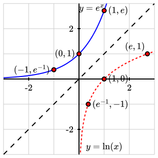
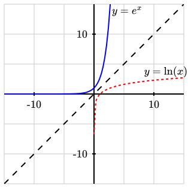

Property 1.
Multiplication inside logs.


| \(\quad f(x)=-e^{-(x-1)}+1 \quad \) | \(\quad \quad g(x)=\ln(x) \quad \quad \) | |
| Domain: | ||
| Range: | ||
| \(x\)-intercept | ||
| \(y\)-intercept | ||
| increasing or decreasing: | ||
| concave up or down: | ||
| grow to \(\infty\) or bounded: |
| \(\quad f(x)=-e^{-(x-1)}+1 \quad \) | \(\quad g(x)=\ln(x) \quad \) | |
| Domain: | \((-\infty,\infty)\) | \((0,\infty)\) |
| Range: | \((-\infty,1)\) | \((-\infty,\infty)\) |
| \(x\)-intercept | \((1,0)\) | \((1,0)\) |
| \(y\)-intercept | \((0,1-e)\approx(0,-1.718)\) | DNE |
| increasing or decreasing: | increasing | increasing |
| concave up or down: | concave down | concave down |
| grow to \(\infty\) or bounded: | bounded above by \(1\) | grows to \(\infty\) |
| t | 1 | 2 | 3 | 4 | 5 | 6 | 7 | 8 | 9 | 10 | 11 |
| h(t) | 6 | 9.5 | 13 | 15 | 16.5 | 17.5 | 18.5 | 19 | 19.5 | 19.7 | 19.8 |